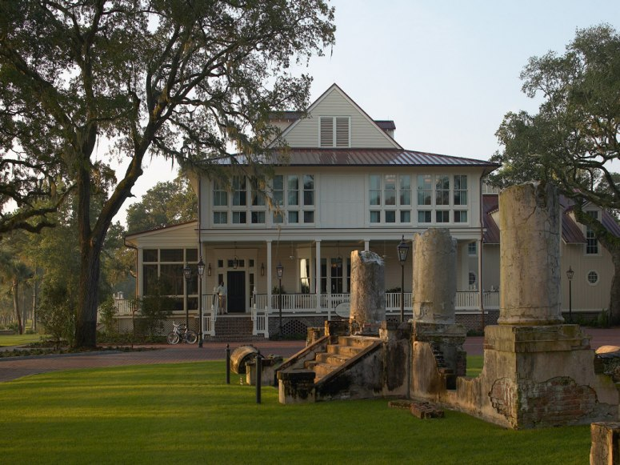
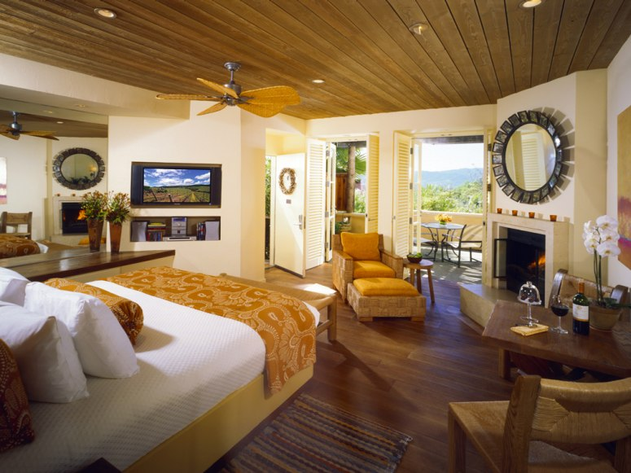
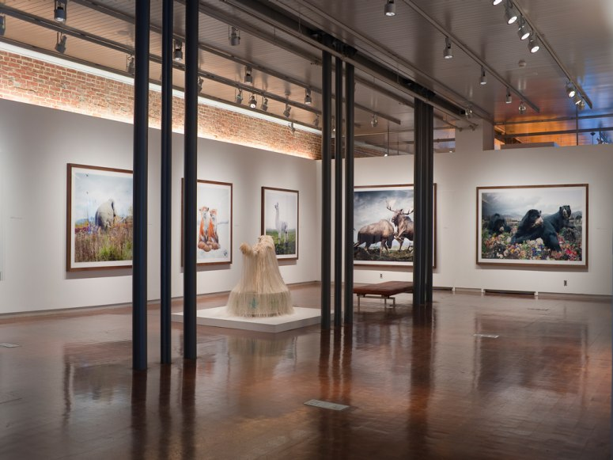
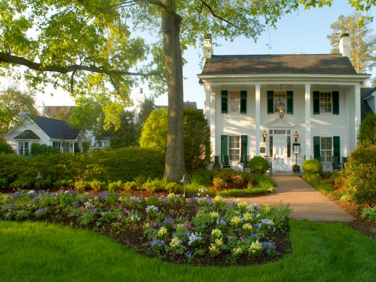
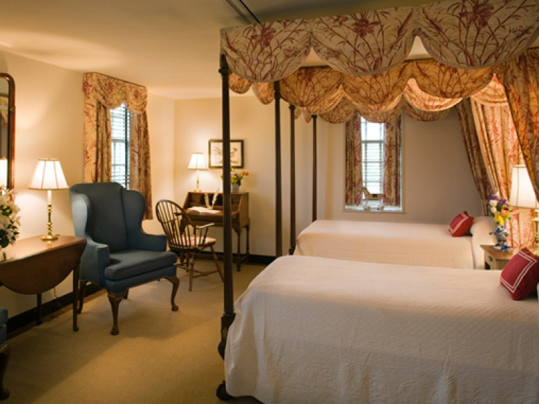
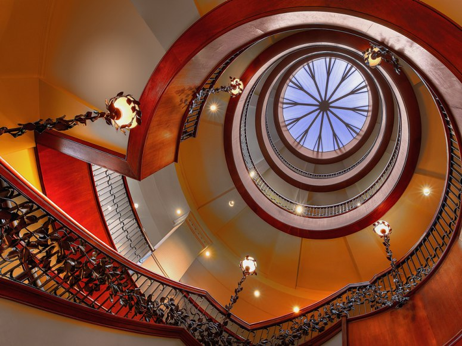
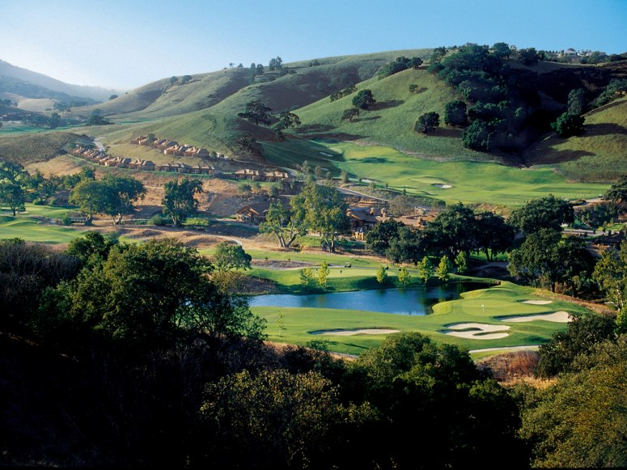
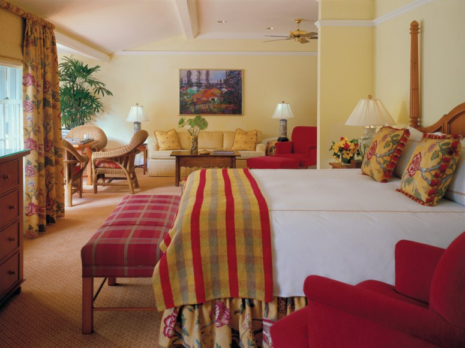
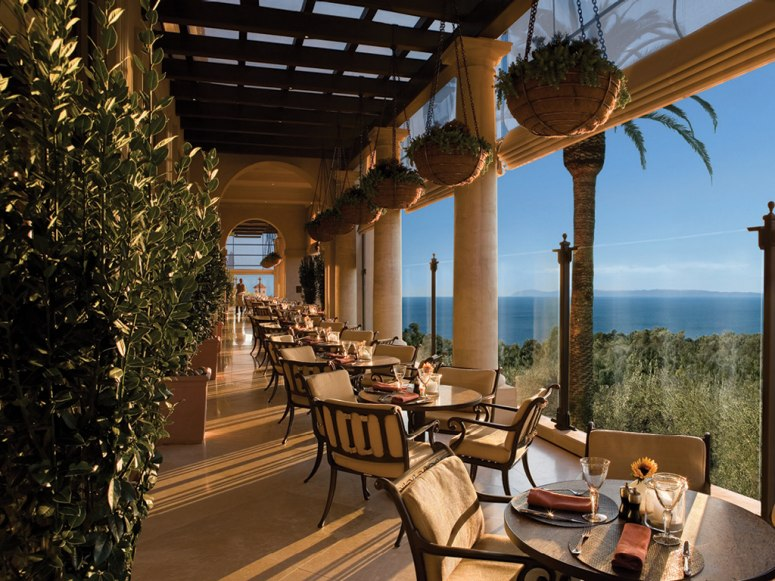

"From the decor to the service, this is one of the greatest hotels I’ve stayed in." The top-scoring Gold List property in the United States, this "oasis of luxury" (opened at the end of 2009) is in the Gold Coast neighborhood, steps from the lakefront. Designed to emulate the grand hotels of Paris in the 1920s, it is set in a 60-story tower that has colonnades, spires, and a motor court. The "fantastic, spacious rooms," ten per floor, have fireplaces, furnished terraces, Italian linens, and white Carrara marble bathrooms with soaking tubs. "Staff make you feel welcome, like they’re really excited that you chose their hotel." "Epicurean paradises" include the European-style bistro Balsan, which focuses on sustainable local ingredients. "I’d like to move in—now."
"This will be the best inn you’ve ever stayed at," by the May River amid acres of forests and ancient freshwater rice fields. "Superb Southern-style service" comes from staff "who make you feel like you are the first ever guests." Rustic cottages are "quiet, secluded, immaculate, and spacious," with screened porches, white-wood doorways, vaulted ceilings, fireplaces, wide pine-plank floors, and hipped metal roofs. "You can do everything—golf, fishing, horseback riding, and a spa are some of the activities—or nothing, and be blissfully happy either way." Alas, the food at the River House Restaurant is "only fair."
This "outstanding luxury resort" is set on 33 acres of vineyards and olive groves—"the views are spectacular." "Sumptuous cottages" done in sun and earth tones have wood-burning fireplaces and refrigerators stocked with local wines and cheeses; bathrooms come with skylights and flat-screen TVs. The "stunning restaurant" serves wine-country cuisine with French Mediterranean influences, and its terrace has heaters for dining out on cool evenings. Enjoy Italian ices and chilled towels at the pool and Reiki at La Pagode, an Asian-style pavilion. The hotel manager "takes care of business and addresses issues without breaking a sweat."
Created from abandoned tobacco and bourbon warehouses, and doubling as a contemporary art museum with more than 9,000 square feet of exhibition space , this property has reclaimed-wood floors, hand-blocked linen upholstery, exposed brickwork and timber trusses, and glass transoms. "The art collection makes it such a fun place to stay." "Unique and creative" guest rooms have Herman Miller chairs, high ceilings, silver mint julep cups, 500-thread-count Egyptian cotton sheets, and rubber ducks in bathtubs. Proof on Main’s menu is inspired by Italy and the American South, hence dishes like the sweet potato agnolotti, and a choice of over 50 Kentucky bourbons, several bottled exclusively for the hotel. "It’s an incredible place for such a small city."
Located eight miles from Chapel Hill, this "charming place" was constructed in 1987 on an old dairy farm and takes its cues from the English and French countryside. Winding redbrick pathways lead guests through "beautiful gardens" with native plants. Garnering a perfect score, accommodations are "the finest rooms anywhere," done in English country style with fireplaces, floral bedspreads, and nineteenth-century furniture. Turndown service includes truffles hand made by the hotel’s chocolatier. The restaurant’s contemporary American cuisine is "out-of-this-world good." The recently opened 4,000-square-foot day spa offers facials, massages, and wraps.
"Step back in time" at this property "right in the middle of the action" in Williamsburg’s historic area. Overlooking brick courtyards and verdant gardens, accommodations in original and reconstructed eighteenth-century buildings come in three themes—floral, classic, and Restoration—and have period furnishings, fireplaces, and handcrafted fabrics in green, red, beige, white, and brown. "We really felt like we were back in the 1700s, except luckily we had all the modern amenities." Dine on regionally inspired contemporary cuisine at the Regency Room, including Dover sole and chateaubriand, or enjoy barbecue specialties like pulled pork sandwiches at Huzzah! BBQ Grille. The staff "are beyond accommodating, and the concierge service is the best of the best."
"Relish the sights and smells that Rhett and Scarlett experienced" at this Charleston mainstay in the Market area, blocks from Charleston Harbour. "Southern hospitality at its finest" includes "many little extras" like champagne upon arrival, milk and cookies at bedtime, a wine and cheese hour, and complimentary breakfast. Expect "spacious, cheerfully decorated, and spotlessly clean rooms" in dramatic colors, and an expansive lobby with a spiral atrium. "The staff are the crowning touch. They will bend over backwards to make you feel welcome and special." Thanks to its location in the historic district, "you’ll never need to take your car out."
At this "isolated, private paradise" near the Santa Cruz Mountains, bungalows, service, and design earned perfect scores. The California-Craftsman resort has rooms with "beautiful, woodsy decor," including fireplaces, leather chairs, Frette linens, and whirlpool tubs. Bungalows and villas on a hillside have private gardens or vineyard views. Play a round on the "tremendous golf course" before enjoying some new Italian cuisine at Il Vigneto. One Iron Bar has panoramas of the golf course, two fireplaces (one indoor, one outdoor), and a list of martinis. "I felt like I was at a country club, but with nicer people." Perfect-scoring staff make your stay "a real treat."
Sited in the central highlands, this plantation-style lodge has an orchid house, stables, and an old church on its grounds. "We love the blend of refinement and Hawaiian aloha spirit." Gold and red combine with plaid and floral prints in rooms with carved headboards. The Dining Room is known for its seafood and estate-grown ingredients, while the more casual Terrace offers bistro fare with garden views—"we’ve never had a bad meal there." Guests can take part in interactive cultural classes or give back through volunteer programs. "Staff were superb, especially to the little ones." Work out the kinks with a hot stone massage at the spa.
This Orange County resort with its "stunning scenery" and Palladian architecture is "near perfection for golfers, spa-goers, and foodies." "The over-the-top villas have all the amenities you can imagine," Italian-limestone fireplaces, travertine flooring, wood-beam ceilings, and "truly striking vistas." Play the South Course, one of two golf courses designed by Tom Fazio, and take in oceanview holes. "The most attentive and pleasantly discreet staff you can imagine, without the stuffy arrogance." The Tuscan Andrea restaurant has a pasta room where the humidity is stringently controlled—it’s "like the best Italian restaurant in Italy—only located in the U.S." Explore Newport Beach and its environs with complimentary transportation by the resort’s Cadillac Escalades. A full-service barber shop was added to the spa in 2011.